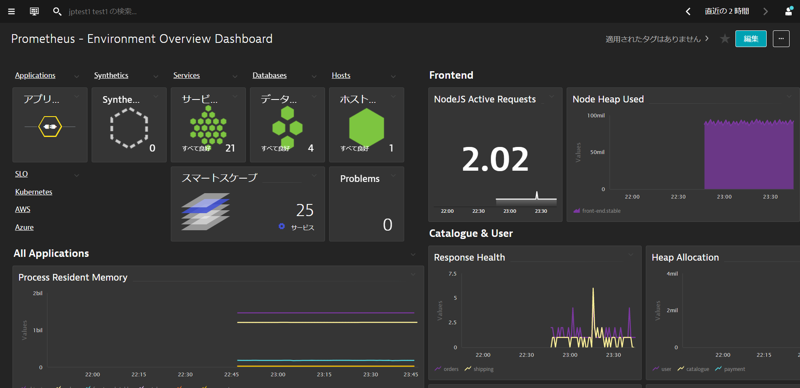
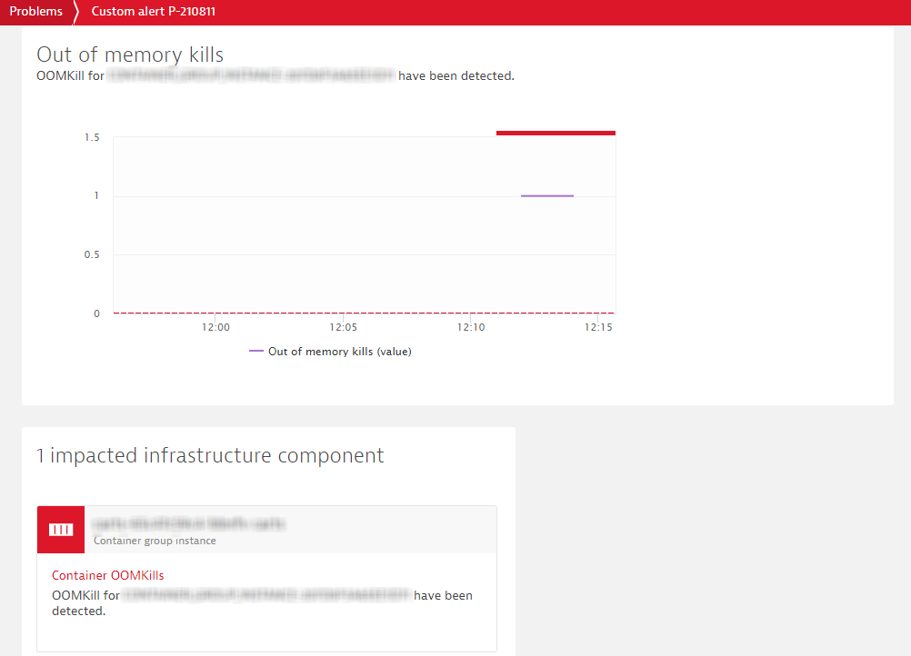

このリポジトリには、Hands-On Kubernetes Sessionのラボが含まれています。今回のハンズオンでは、AWSで動作するKubernetesインスタンスを使用しますが、他のプラットフォームでも動作します。
Dynatrace主催のハンズオンワークショップへ参加されている方には環境が自動で払い出されます。
事前準備
学習内容
- Dynatrace Operatorの導入
- 自動作成されたKubernetesのダッシュボードの確認
- Kubernetesにおけるラベルとアノテーション
- Kubernetesのプロセスグループネーミングとサービスネーミング
- Dynatrace上でのKubernetes情報の確認
- Namespace
- ワークロード
- コンテナ/ポッド
この演習では、Kubernetes(Microk8s)を実行しているLinuxインスタンスにOneAgentをデプロイし、そのインスタンスで何が実行されているかOneAgentが見つけたものを確認します。
ブラウザ経由でのターミナルアクセス
ラボを円滑に進めるために、LinuxインスタンスにWebブラウザを介したターミナルでアクセスします。
メールに記載されているURLを使用して、SSHターミナルにアクセスします。URLが Public IP Address:8080/wetty のようになっていることを確認してください。
メールに記載されているログイン名とパスワードを使用します。

OneAgentのダウンロード
ブラウザを開き、DynatraceのGUIにアクセスしてください。
以下の手順で進めてください。
- ナビゲーションメニューから Hub を検索します。
- Starを付けてお気に入りに追加し、クリックします。
- Kubernetes を選択します。
- 右下の Monitor Kubernetes ボタンを選択します。

Monitor Kubernetes / Openshiftページ内で、以下の手順を行います。
- 名前 を入力してください 例：
k8s - Create tokensをクリックして、適切なパーミッションのPaaSおよびAPIトークンを作成してください。
- Skip SSL Certificate Checkを有効にします。
- Copy ボタンをクリックしてコマンドをコピーしてください。
- ターミナルウィンドウに貼り付けて実行してください。

出力例
Connecting to github-releases.githubusercontent.com (github-releases.githubusercontent.com)|185.199.108.154|:443... connected.
HTTP request sent, awaiting response... 200 OK
Length: 7310 (7.1K) [application/octet-stream]
Saving to: ‘install.sh'
install.sh 100%[=====================================================>] 7.14K --.-KB/s in 0s
2021-06-01 05:46:36 (40.7 MB/s) - ‘install.sh' saved [7310/7310]
Check for token scopes...
Check if cluster already exists...
Creating Dynatrace namespace...
Applying Dynatrace Operator...
Warning: apiextensions.k8s.io/v1beta1 CustomResourceDefinition is deprecated in v1.16+, unavailable in v1.22+; use apiextensions.k8s.io/v1 CustomResourceDefinition
customresourcedefinition.apiextensions.k8s.io/dynakubes.dynatrace.com created
serviceaccount/dynatrace-dynakube-oneagent created
serviceaccount/dynatrace-dynakube-oneagent-unprivileged created
serviceaccount/dynatrace-kubernetes-monitoring created
serviceaccount/dynatrace-operator created
serviceaccount/dynatrace-routing created
podsecuritypolicy.policy/dynatrace-dynakube-oneagent created
podsecuritypolicy.policy/dynatrace-dynakube-oneagent-unprivileged created
podsecuritypolicy.policy/dynatrace-kubernetes-monitoring created
podsecuritypolicy.policy/dynatrace-operator created
podsecuritypolicy.policy/dynatrace-routing created
role.rbac.authorization.k8s.io/dynatrace-dynakube-oneagent created
role.rbac.authorization.k8s.io/dynatrace-dynakube-oneagent-unprivileged created
role.rbac.authorization.k8s.io/dynatrace-kubernetes-monitoring created
role.rbac.authorization.k8s.io/dynatrace-operator created
role.rbac.authorization.k8s.io/dynatrace-routing created
clusterrole.rbac.authorization.k8s.io/dynatrace-kubernetes-monitoring created
clusterrole.rbac.authorization.k8s.io/dynatrace-operator created
rolebinding.rbac.authorization.k8s.io/dynatrace-dynakube-oneagent created
rolebinding.rbac.authorization.k8s.io/dynatrace-dynakube-oneagent-unprivileged created
rolebinding.rbac.authorization.k8s.io/dynatrace-kubernetes-monitoring created
rolebinding.rbac.authorization.k8s.io/dynatrace-operator created
rolebinding.rbac.authorization.k8s.io/dynatrace-routing created
clusterrolebinding.rbac.authorization.k8s.io/dynatrace-kubernetes-monitoring created
clusterrolebinding.rbac.authorization.k8s.io/dynatrace-operator created
deployment.apps/dynatrace-operator created
W0601 05:46:39.025776 29593 helpers.go:553] --dry-run is deprecated and can be replaced with --dry-run=client.
secret/dynakube configured
Applying DynaKube CustomResource...
dynakube.dynatrace.com/dynakube created
Adding cluster to Dynatrace...
Kubernetes monitoring successfully setup.
$
インストールの確認
Show deployment statusをクリックすると、接続されているホストの状態を確認することができます。
下の画像のように、接続されたホストが表示されているはずです。

⚠️ トラブルシューティングの手順
すべてがうまくいっていれば、Show Deployment statusをクリックすると、ホストが表示されます。
Sockshopアプリケーションの再起動
様々なプロセスが自動的に検出されているのがわかりますが、Dynatraceはそれらを再起動するよう促します。これは、コードを変更せずに自動的に監視を行うために必要です。
以下のコマンドを実行して、DevとProductionのPodsを作り直します。
kubectl delete pods --all -n dev
kubectl delete pods --all -n production
Kubernetes integrationの設定
DynatraceのUIからSettings > Cloud and virtualization > Kubernetesを開きます。
以下の設定を実施します。
- 作成されたKubernetesクラスタの鉛筆のアイコンをクリックします。
- Monitor annotated Prometheus exportersを有効にします。
- Monitor eventsを有効にします。
- Include all events relevant for Davisを有効にします。
- Saveをクリックします。

アプリケーションには、Nginx、Redis、RabbitMQ、MySQL、MongoDBなどのサードパーティのテクノロジーが使用されていることが多く、これらについては、メトリクスの観点からさらなる洞察が必要となります。
Dynatraceでは、Prometheusと同じ形式のメトリクスを取り込むことができ、マイクロサービスやポッドのより大きな文脈の中にそれらを取り込み、これらのメトリクスの自動適応ベースライン化による強化されたアラートを可能にします。
さらに良いことに、Dynatraceはスクレイピングを実行してくれるので、Prometheusサーバーは必要ありません。

Prometheusエクスポーターポッドのアノテーション
シェルターミナルに戻り、次のコマンドを実行して、ポッドにPrometheus scrapingのためにannotationを付与します。
このコマンドは、Production namespace内のポッドにアノテートを付与します。
kubectl annotate po -n production --all --overwrite metrics.dynatrace.com/scrape=true
kubectl annotate po -n production --all --overwrite metrics.dynatrace.com/port=8080
メトリクスの探索
1～2分ほど待ってから、Dynatrace UIで
- Metrics ビューに移動します。
- filter テキストボックスに
process_と入力し、"Enter "キーを押してください。 - いくつかの異なるメトリクスが表示されます。これらはPrometheusから抜粋したものです。何も表示されない場合は、もう少し待ってから、画面を更新して再度試してみてください。
- いずれかの項目をクリックすると、収集されたメトリクスを dimensions も含めて調べることができます。Dynatraceは、Kubernetesのワークロード、ネームスペース、ノードなどを 自動的に関連付け、これを原因究明エンジンに送り込んでいることに注目してください。

これで、これらのメトリクスを簡単に チャート化 したり、** ダッシュボード** を作成することができます。ダッシュボードのサンプルは後ほどハンズオンでご紹介しますので、参考にしてください。
さらに、メトリクスに基づいてアラートを作成することもできます。
メトリクスに基づくカスタムアラートを取得する方法
PrometheusのメトリクスをDynatraceで利用できるようになりました。サードパーティ製ではありますが、これらのメトリクスもDynatraceのメトリクスとして扱われます。
Dynatraceネイティブのメトリクスと同じように、チャートやダッシュボードでそれらのメトリクスを視覚化できることはすでに見てきました。
しかし、もちろん、ダッシュボードを見ることに毎日を費やしたくはないでしょう。欲しいのは、キャプチャしているメトリクスに関連する異常があった場合に通知されることです。
メトリクスに対してcustom Anomaly Detection ruleを定義することができます。
セッション終了後、お時間のある方はぜひお試しください。
Sockshopアプリを再起動すると、Dynatraceにサービスが表示されるようになります。
~/sockshop/manifests/sockshop-app/production/front-end.ymlを参考にして、Dynatraceが自動的にアノテーションとラベルを拾うように設定したいと思います。
---
apiVersion: apps/v1
kind: Deployment
metadata:
creationTimestamp: null
labels:
app: front-end.stable
product: sockshop
release: stable
stage: prod
tier: frontend
version: "1.4"
name: front-end.stable
namespace: production
spec:
replicas: 1
selector:
matchLabels:
app: front-end.stable
product: sockshop
release: stable
stage: prod
tier: frontend
version: "1.4"
strategy:
rollingUpdate:
maxSurge: 1
maxUnavailable: 1
type: RollingUpdate
template:
metadata:
annotations:
pipeline.build: 1.4.0.7424
pipeline.project: sockshop
pipeline.stage: prod-stable
sidecar.istio.io/inject: "false"
support.channel: '#support-sockshop-frontend'
support.contact: jane.smith@sockshop.com
labels:
app.kubernetes.io/name: front-end
app.kubernetes.io/version: "1.4"
app.kubernetes.io/part-of: sockshop
app: front-end.stable
product: sockshop
release: stable
stage: prod
tier: frontend
version: "1.4"
サービスアカウントへのview role の割り当て
OneAgentはサービスアカウントを使用して、Kubernetes REST APIを介してメタデータを照会します。 そのためにはサービスアカウントに、viewer roleが付与されている必要があります。 CLIで、production projectに対して以下のコマンドを実行します。
kubectl create rolebinding serviceaccounts-view --clusterrole=view --group=system:serviceaccounts:production --namespace=production
dev projectに対しても同様に実行します。
kubectl create rolebinding serviceaccounts-view --clusterrole=view --group=system:serviceaccounts:dev --namespace=dev
Dynatraceが変更を認識するまで待ちます。
確認
作業が完了したら、Dynatraceで変更を検証することができます。

環境変数の追加
シェルターミナルで、以下のコマンドで環境変数を追加します。
nano ~/sockshop/manifests/sockshop-app/production/front-end.yml
インデントが正しく行われているか、エラープロンプトが表示されていないかを確認してください。
env:
- name: DT_TAGS
value: "product=sockshop"
- name: DT_CUSTOM_PROP
value: "SERVICE_TYPE=FRONTEND"

修正したファイルをCtrl-X、Y、Enterで保存し、以下のコマンドを実行して変更を再適用します。
kubectl apply -f ~/sockshop/manifests/sockshop-app/production/front-end.yml
wget -O- https://raw.githubusercontent.com/Dynatrace-APAC/Workshop-Kubernetes/master/recycle-sockshop-frontend.sh | bash
確認
作業が完了したら、Dynatraceで変更を検証することができます。

Settings -> Processes and containers -> Process group namingへ移動し、Add a new ruleをクリックします。
ルールに名前を付けてください（例: Kubernetes Project.Namespace.Container）
k8s-{ProcessGroup:Kubernetes:pipeline.project}.{ProcessGroup:KubernetesNamespace}.{ProcessGroup:KubernetesContainerName} という形式で入力してください。
Conditionsドロップダウンリストでは, Kubernetes namespaceとexistsを選択します。

Previewをクリックし、マッチしているエントリーを確認します。

Create RuleとSave Changesをクリックします。
確認
作業が完了したら、Dynatraceで変更を確認することができます。

サービス名の命名規則
Settings -> Server-side service monitoring -> Service naming rulesへ移動し、Add a new ruleをクリックします。
ルールに名前を付けてください（例: Kubernetes Project.Namespace.Container）
{Service:DetectedName}.{ProcessGroup:KubernetesNamespace} という形式で入力してください。
Conditionsドロップダウンリストでは, Kubernetes namespaceとexistsを選択します。

Previewをクリックし、マッチしているエントリーを確認します。

Create RuleとSave Changesをクリックします。
確認
作業が完了したら、Dynatraceで変更を確認することができます。

この演習では、Dynatrace環境の設定を自動化します。
Dynatrace Monitoring as Code (Monaco)を使用して、すべてのグローバルなDynatrace環境の設定を人手を介さずに自動化することができます。 以下の様々なユースケースがあります。
- 複数の環境で再利用できるように、構成をテンプレート化する機能を持つこと
- コンフィグレーション間の相互依存性は、一意の識別子を追跡することなく処理する必要があります。
- 同じコンフィグレーションを何百ものDynatrace環境に簡単に適用・更新できる機能を導入し、特定の環境にロールアウトすることができます。
- アプリケーション固有の構成をある環境から別の環境へと促進するための簡単な方法を特定し、開発からハードニング、本番までのデプロイメントを追跡します。
- プルリクエスト、マージ、承認など、gitベースのワークフローのすべてのメカニズムとベストプラクティスをサポートする。
- コンフィグレーションは、開発からハードニング、本番へのデプロイメント後、1つの環境から別の環境へと簡単に昇格できなければなりません。
セッションを円滑に進めるために、以下のコードを実行します。
cd sockshop
./deploy-monaco.sh
コマンドの実行後に、DT_TENANTとDT_API_TOKENとDT_DASHBOARD_OWNERの変数を設定します。 これらは、ラボの登録メール内に記載されています。
export DT_TENANT= https://mou612.managed-sprint.dynalabs.io/e/<ENV>
export DT_API_TOKEN=dt0c01.IH6********************************************
export DT_DASHBOARD_OWNER=<your email address>
コマンドの実行後に、以下のコマンドを実行してDynatraceの設定を行います。
./push-monaco.sh
以下の設定が自動的に行われました。
- シンセティック・モニタリング
- サービスネーミングルール
- カートSLO
- アプリケーション定義
- ダッシュボード
- プロセスのネーミングルール
- 管理ゾーン
Kubernetes Cluster Overview
Kubernetesクラスタの使用率を確認することができます。すべてのノードおよびネームスペースごとにCPUおよびメモリのリクエストとリミットを 確認することができます。 また、filter barを使ってダッシュボードをフィルタリングすることもできます。

Kubernetes Workload Overview
ネームスペースに割り当てられたKubernetesのワークロードとその使用状況の概要を確認することができます。 また、filter barを使ってダッシュボードをフィルタリングすることもできます。

Prometheus Overview
先のステップでMonacoが生成したPrometheusダッシュボード内で、Prometheusが収集したメトリクスの概要を確認します。

Kubernetes View内の様々な機能（クラスタの使用状況、クラスタのワークロード、K8Sイベントなど）を確認できます。
- 左のメニューから、Kubernetesでフィルターすることで簡単にアクセスできます。

Kubernetes Clusterの利用状況の分析
- マウスオーバーして、CPUとメモリの使用量を最小／最大で表示します。
- 各ノードの詳細を調べるには、Analyze Nodesをクリックします。

Kubernetesクラスタのワークロードの分析
- ワークロードとポッドを種別毎に確認することができます。

Kubernetes イベントの分析
- BackOffやUnhealthyなどタイプ毎に確認することができます。

Kubernetes Workloadsを調べる
- それぞれをクリックすると、対応する技術が表示されます。

Kubernetesの名前空間とそのワークロードを調べる
- それぞれをクリックすると、使用率とワークロードが表示されます。

ワークロードのリソース使用量の管理
Kubernetesプラットフォームは、多くの仮想化および抽象化レイヤーの上に構築されていますが、ワークロードが使用しているリソースを意識する必要があります。
これは、Kubernetesが通常、共有インフラ上で動作するプラットフォームとして設計されているため、あなたが使用するリソースの量が、同じクラスタ上で動作する他のアプリケーションに影響を与える可能性があるためです。
シナリオ
- Kubernetesプラットフォームの管理者は、プロジェクト（名前空間）が遵守する必要のあるリソースクォータを設定します。
- アプリケーションチームは、指定されたリソースを異なるマイクロサービスに割り当てる責任があります。
- 以下のコマンドを実行して、このデプロイメントを適用します。
cd sockshop
./deploy_newbuild.sh
あなたのDynatraceコンソールから目を離さないでください...何が起こるかわかりません。
ある時、appsチームとk8s infraチームの両方が、Dynatraceからのアラートを受け取りました。それを見てみましょう。

新しいカートサービスポッドのコンテナがOOMKilledされました。これは、メモリ使用量が設定された上限を超えたことを意味します。今日まで、OOMKilledの問題は発生していませんでした。
コンテナをクリックすると、コンテナービューにドリルダウンします。

コンテナビューには、リソースの消費状況を明確に把握するために必要なすべてのメトリクスとデータポイントが表示されます。

これは新しいビルドと関係があり、次のどちらかが問題の原因となります。
- コンテナのメモリ制限が間違って設定されていた
- 新しいビルドにメモリリークがあり、時間の経過とともに制限値以上のメモリを消費している。
- このような場合、いくらメモリ制限を増やしても、結局は制限を超えてしまいます。これでは時間稼ぎをしているだけで、コード自体を修正する必要があります。
- さまざまな条件でテストを行い、Javaのメモリメトリクスをプロセスビューから監視します。Dynatraceは、必要となるすべてのメトリクスを提供しています。

開発チームはすぐにこの問題を発見し、修正を行いました。この問題は、設定上の問題に関連しています。コンテナのメモリ制限が誤って設定されていました。
ターミナルでは、修正を適用するために実行します。
kubectl apply -f ~/sockshop/manifests/sockshop-app/newbuilds/newbuild-quota-fix.yml
教訓として
- Kubernetesにおけるリソース管理は重要です。
- インフラやクラウドサービスでは、リソースは常に制限されており、コストがかかります。
- ワークロードのリソース消費量を把握することは、様々なサービスに対してどのような要求や制限を設定すべきかを把握するための鍵となります。
k8sのインフラ運用チームは、常に必要な分だけのリソースを提供してくれます。彼らの責任は、プラットフォームを利用するすべての人のために、プラットフォームが健全に保たれるようにすることです。そのため、より多くのリソースが必要な場合には、プラットフォームチームと交渉しなければなりません。どのような交渉でも、できるだけ多くの情報を持ってテーブルにつくことが大切です。
そのためには、Dynatraceが頼りになります。
このラボを楽しんでいただき、お役に立てれば幸いです。ご意見、ご感想をお待ちしております。